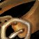

Belt of Primal Majesty
Belt of Primal MajestyBelt of Primal Majesty249 armor, 34 stamina, 29 intellect, 28 spell damage, 84 healing power, 37 spell haste ratingDrops from Gurtogg Bloodboil, Black Temple
249 armor, 34 stamina, 29 intellect, 28 spell damage, 84 healing power,
37 spell haste rating
Drops from Gurtogg Bloodboil, Black Temple
What influencers say
NOHITJEROME
NOHITJEROME · 30:05
5k views
Puts it on Restoration Druid
He describes it as a near clone of Angelista's Sash and says both haste
belts are worse than Belt of Divine Guidance unless the druid needs the
belt slot to hit the haste target.
Showing all 3 spec cards.
No specs are selected, so no cards are showing. Use Show every spec to bring all of them back.
Holy Paladin
Prioritynot yet decided
Constraints
No hit cap applies to this spec.
No crit cap.
Global cooldown floor at 50% spell haste, which nothing rostered reaches
from gear this phase.
Delta
Belt of Primal MajestyBelt of
Primal Majesty249 armor, 34 stamina, 29
intellect, 28 spell damage, 84 healing power, 37 spell haste
ratingDrops from Gurtogg Bloodboil,
Black Temple in Holy
Paladin terms EPV
157.70
| Stat | Over best Phase 3 off-piece, Hyjal Summit Angelista's SashAngelista's Sash133 armor, 29 stamina, 30 intellect, 28 spell damage, 84 healing power, 37 spell haste ratingDrops from Kaz'rogal, Mount Hyjal EPV 158.20 | Over next best off-piece, Black Temple Naturalist's Preserving CinchNaturalist's Preserving Cinch556 armor, 29 stamina, 30 intellect, 28 spell damage, 84 healing power, 37 spell haste ratingDrops from Supremus, Black Temple EPV 158.20 | Over next best off-piece, Hyjal Summit Girdle of HopeGirdle of Hope993 armor, 38 stamina, 27 intellect, 28 spell damage, 84 healing power, 21 spell crit rating (0.95%)Sockets yellow, yellow · Socket bonus 3 intellectDrops from Azgalor, Mount Hyjal EPV 152.63 | Over best pre-phase off-piece, Tailoring Primal Mooncloth BeltPrimal Mooncloth Belt109 armor, 12 intellect, 11 spirit, 27 spell damage, 81 healing powerSockets yellow, blue · Socket bonus 3 intellectCrafted, Tailoring EPV 137.00 | ||||
|---|---|---|---|---|---|---|---|---|
| Change | Converted | Change | Converted | Change | Converted | Change | Converted | |
| armor | +116 | -307 | -744 | +140 | ||||
| stamina | +5 | +5 | -4 | +34 | ||||
| intellect | -1 | -0.01% spell crit · -0.39 spell damage · -0.39 healing power | -1 | -0.01% spell crit · -0.39 spell damage · -0.39 healing power | +2 | +0.03% spell crit · +0.77 spell damage · +0.77 healing power | +17 | +0.23% spell crit · +6.54 spell damage · +6.54 healing power |
| spirit | 0 | 0 | 0 | -11 | ||||
| spell damage | 0 | 0 | 0 | +1 | ||||
| healing power | 0 | 0 | 0 | +3 | ||||
| spell crit | 0 | 0 | -21 | -0.95% | 0 | |||
| spell haste rating | 0 | 0 | +37 | +37 spell haste rating | +37 | +37 spell haste rating | ||
| Stat Highlights (Total Change) | -0.01% spell crit -0.39 spell damage -0.39 healing power | -0.01% spell crit -0.39 spell damage -0.39 healing power | -0.92% spell crit +0.77 spell damage +0.77 healing power +37 spell haste rating | +0.23% spell crit +7.54 spell damage +9.54 healing power +37 spell haste rating | ||||
No Tier 6 and no Tier 5 is ranked for this spec in this slot, so that
comparison is not shown. A weapon the workbook does not rank cannot be
compared against, and a spec with no captured gear set has nothing
recorded to carry in.
Restoration Shaman
Prioritynot yet decided
Constraints
No hit cap applies to this spec.
No crit cap.
Global cooldown floor at 50% spell haste, which nothing rostered reaches
from gear this phase.
Delta
Belt of Primal MajestyBelt of
Primal Majesty249 armor, 34 stamina, 29
intellect, 28 spell damage, 84 healing power, 37 spell haste
ratingDrops from Gurtogg Bloodboil,
Black Temple in
Restoration Shaman terms EPV 172.34
| Stat | Over best Phase 3 off-piece, Hyjal Summit Angelista's SashAngelista's Sash133 armor, 29 stamina, 30 intellect, 28 spell damage, 84 healing power, 37 spell haste ratingDrops from Kaz'rogal, Mount Hyjal EPV 172.86 | Over next best off-piece, Black Temple Naturalist's Preserving CinchNaturalist's Preserving Cinch556 armor, 29 stamina, 30 intellect, 28 spell damage, 84 healing power, 37 spell haste ratingDrops from Supremus, Black Temple EPV 172.86 | Over best pre-phase off-piece, Tempest Keep Girdle of Fallen StarsGirdle of Fallen Stars506 armor, 26 stamina, 18 intellect, 25 spell damage, 73 healing powerSockets yellow, yellow · Socket bonus 7 healing power, 3 spell damageDrops from Trash / zone drop, Tempest Keep EPV 137.06 | Over next best off-piece, Tailoring Primal Mooncloth BeltPrimal Mooncloth Belt109 armor, 12 intellect, 11 spirit, 27 spell damage, 81 healing powerSockets yellow, blue · Socket bonus 3 intellectCrafted, Tailoring EPV 132.09 | ||||
|---|---|---|---|---|---|---|---|---|
| Change | Converted | Change | Converted | Change | Converted | Change | Converted | |
| armor | +116 | -307 | -257 | +140 | ||||
| stamina | +5 | +5 | +8 | +34 | ||||
| intellect | -1 | -0.01% spell crit · -0.30 spell damage · -0.30 healing power | -1 | -0.01% spell crit · -0.30 spell damage · -0.30 healing power | +11 | +0.14% spell crit · +3.30 spell damage · +3.30 healing power | +17 | +0.21% spell crit · +5.10 spell damage · +5.10 healing power |
| spirit | 0 | 0 | 0 | -11 | ||||
| spell damage | 0 | 0 | +3 | +1 | ||||
| healing power | 0 | 0 | +11 | +3 | ||||
| spell haste rating | 0 | 0 | +37 | +37 spell haste rating | +37 | +37 spell haste rating | ||
| Stat Highlights (Total Change) | -0.01% spell crit -0.30 spell damage -0.30 healing power | -0.01% spell crit -0.30 spell damage -0.30 healing power | +0.14% spell crit +6.30 spell damage +14.30 healing power +37 spell haste rating | +0.21% spell crit +6.10 spell damage +8.10 healing power +37 spell haste rating | ||||
No Tier 6 and no Tier 5 is ranked for this spec in this slot, so that
comparison is not shown. A weapon the workbook does not rank cannot be
compared against, and a spec with no captured gear set has nothing
recorded to carry in.
Restoration Druid
Prioritynot yet decided
Constraints
No hit cap applies to this spec.
No crit cap.
Part of this spec's damage is periodic, and periodic damage cannot crit
in this patch, so crit reaches less of its output than the character
sheet suggests.
Global cooldown floor at 50% spell haste, which nothing rostered reaches
from gear this phase.
Delta
Belt of Primal MajestyBelt of
Primal Majesty249 armor, 34 stamina, 29
intellect, 28 spell damage, 84 healing power, 37 spell haste
ratingDrops from Gurtogg Bloodboil,
Black Temple in
Restoration Druid terms EPV 92.70
| Stat | Over best pre-phase off-piece, Tailoring Primal Mooncloth BeltPrimal Mooncloth Belt109 armor, 12 intellect, 11 spirit, 27 spell damage, 81 healing powerSockets yellow, blue · Socket bonus 3 intellectCrafted, Tailoring EPV 135.90 | Over best Phase 3 off-piece, Black Temple Belt of Divine GuidanceBelt of Divine Guidance133 armor, 35 stamina, 24 intellect, 32 spirit, 25 spell damage, 73 healing powerSockets yellow, blue · Socket bonus 7 healing power, 3 spell damageDrops from The Illidari Council, Black Temple EPV 133.80 | Over next best
off-piece, Tailoring
 Belt of the Long RoadBelt of the Long Road121 armor, 13 stamina, 18 intellect, 33 spirit, 25 spell damage, 73 healing powerSockets blue, yellow · Socket bonus 7 healing power, 3 spell damageCrafted, Tailoring EPV 132.30 |
Over next best off-piece, Tempest Keep Girdle of ZaetarGirdle of Zaetar227 armor, 22 stamina, 23 intellect, 24 spirit, 25 spell damage, 73 healing powerSockets blue, blue · Socket bonus 7 healing power, 3 spell damageDrops from Void Reaver, Tempest Keep EPV 131.10 | ||||
|---|---|---|---|---|---|---|---|---|
| Change | Converted | Change | Converted | Change | Converted | Change | Converted | |
| armor | +140 | +116 | +128 | +22 | ||||
| stamina | +34 | -1 | +21 | +12 | ||||
| intellect | +17 | +0.21% spell crit | +5 | +0.06% spell crit | +11 | +0.14% spell crit | +6 | +0.07% spell crit |
| spirit | -11 | -32 | -33 | -24 | ||||
| spell damage | +1 | +3 | +3 | +3 | ||||
| healing power | +3 | +11 | +11 | +11 | ||||
| spell haste rating | +37 | +37 spell haste rating | +37 | +37 spell haste rating | +37 | +37 spell haste rating | +37 | +37 spell haste rating |
| Stat Highlights (Total Change) | +0.21% spell crit +1 spell damage +3 healing power +37 spell haste rating | +0.06% spell crit +3 spell damage +11 healing power +37 spell haste rating | +0.14% spell crit +3 spell damage +11 healing power +37 spell haste rating | +0.07% spell crit +3 spell damage +11 healing power +37 spell haste rating | ||||
No Tier 6 and no Tier 5 is ranked for this spec in this slot, so that
comparison is not shown. A weapon the workbook does not rank cannot be
compared against, and a spec with no captured gear set has nothing
recorded to carry in.